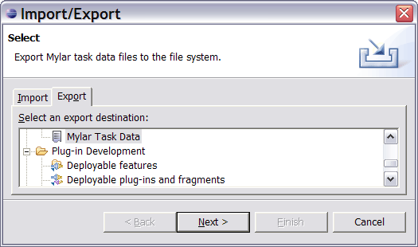
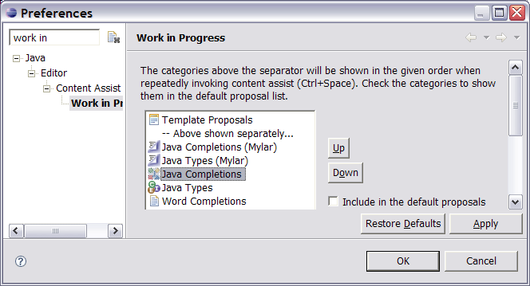

Setup
Integration
Working with Context
Tasks and Repository Connectors
Java Development
Key Limitations
Recommendations for Mylar 0.5.0:
The goal is for Mylar to have no noticeable effect on Eclipse's speed or memory usage, you do not need to increase the amount of memory Eclipse runs with to use Mylar, and any performance issue should be reported as a bug. The current performance profile is:
For supported platforms and known limitations please see http://eclipse.org/mylar/dl.php Install/update failures can include:
Update manager failure: the update manager failed because it could not access the update site, or because it got confused about the configuration state of your Eclipse. In this case you may see update errors like: org.eclipse.update.internal.core.SiteFilePackedPluginContentConsumer. First try updating again to see if the feature is accessible. If you are trying to update the JIRA connector you can also try de-selecting that feature in case the Tigris.org update site is not accessible. Using use "Search new features.." when installing can help avoid this problem. If that does not work see the feature configuration troubleshooting below.
Incompatible VM (e.g. JDK 1.4): in this case you'll errors like the following in your log file. To check JDK version that Eclipse was launched with to to Help -> About Eclipse SDK -> Configuration Details and verify that the java.vm.version is 1.5. Mac users should refer to the last comment on bug 1163477 for instructions on how to change the 1.4 default.
Root exception:
java.lang.UnsupportedClassVersionError:
org/eclipse/mylar/tasklist/MylarTasklistPlugin
(Unsupported major.minor version 49.0)
If you are using JDK 1.6 on Eclipse 3.1 (not
recommended) you must add the following line to your config.ini file:
org.osgi.framework.executionenvironment=OSGi/Minimum-1.0,OSGi/Minimum-1.1,JRE-1.1,J2SE-1.2,
J2SE-1.3,J2SE-1.4,J2SE-1.5,JavaSE-1.6
Incompatible version of Eclipse: separate versions and update sites exist for Eclipse 3.1 and for the latest 3.2), in which case you may see errors like the following in your <workspace>/.metadata/.log file or in a Mylar view:
java.lang.NoSuchMethodError:
org.eclipse.ui.internal.dialogs.FilteredTree.getFilterControl()
The activator org.eclipse.mylar.java.MylarJavaPlugin for bundle org.eclipse.mylar.java is invalid
Mylar feature configuration problem: if the above do not address the issue, the easiest thing to do is uninstall any old versions and update to the latest Mylar. Your tasks won't be lost, by default they are stored in the <workspace>/.mylar/tasklist.xml file which will be read next time Mylar starts correctly. First, uninstall the old version of Mylar using Help -> Software Updates -> Manage Configuration. You need to first Disable on all Mylar features by right-clicking them, allow Eclipse to restart after the last is disabled, and after restart. Then ensure that the 3rd toolbar button is pressed (figure below) so that you see the disabled features to uninstall, and Uninstall them using the popup menu. If you don't uninstall the the Update Manager will think that you have the latest and tell you that there are no updates. Note that manually removing the plug-ins and features can lead to Eclipse configuration errors. After uninstalling update Eclipse by adding the correct update site specified at: http://eclipse.org/mylar/dl.php, and after that automatically or manually updating will install the correct version.
Mylar Task Management features make user of Eclipse's Internal Browser which may require additional install steps. The following have been verified on Fedora Core.
If you are get exceptions indicating missing libraries, check that the paths are accurate and that you in fact have the libraries requested. For example, on our test box a library was still missing after these steps. The libstdc++.so.5 was being reported as missing. To solve this problem, find an rpm online that will install the missing legacy library. In our case we found necessary rpm (compat-libstdc++-33-3.2.3-47.fc4.i386.rpm) on rpmfind.net using their search facility. References: SWT FAQ
If you see errors like the following it may be due to Xerces missing from the Mac JDK so you may need to add it to your default classpath. Please refer to and comment on bug 144287 if you see this problem.
Could not create Bugzilla editor input
java.io.IOException: SAX2 driver class org.apache.xerces.parsers.SAXParser not found
To ensure that you are using the 1.5 VM refer to the last comment on bug 1163477 for instructions on how to change the 1.4 default.
On Eclipse 3.1, you may need to reset the Java editor to be default for ".java" again via: Preferences -> General -> Editors -> File Associations
On Eclipse 3.2, you may need to ensure that the "Java Completions" and "Java Types" proposal categories are included in the default proposals via: Preferences -> Java -> Editor -> Content Assist -> Advanced (see screenshot) -> Restore Defaults
The task list is backed up by default in the <workspace>/.mylar/backup directory, with rolling backups set according to the schedule in Preferences -> Mylar -> Task List -> Backup. Use File -> Import -> Mylar Task Data to restore from one of the archive zips.
If the Task List is blank Mylar failed to install or update, or there was a problem reading the task list. By default Mylar keeps your task list in <workspace>/.mylar/tasklist.xml. If you move workspaces, and have not changed the Mylar data directory via the Task List preference page, the new location will be used when Eclipse restarts (hit Restore Defaults on that page to copy tasks back to the default location). If your tasks disappear due to to a bug you can check the .mylar folder for a tasklist-backup.xml file, which will contain the previously-saved list.
You can also back up your task list and context data manually or periodically use File -> Import/Export -> Mylar Task Data. Note that when restoring an previous tasklist.xml file you should first close Eclipse.

All of them. When no task is active neither are any of Mylar's features. When working with task contexts Mylar's Focused UI features are all optional and in general configurable. The following table summarizes how the key features can be toggled. Additional configuration options are under the Mylar and General -> Appearance preference pages.
| UI Mechanism | Example/description | Toggle using |
| Interest filtering | Package Explorer | Apply Mylar button on view toolbar |
| Interest decoration | Bolding of landmark elements | Preferences -> General -> Appearance -> Label Decoration |
| Content assist | Ranking of interesting elements | Eclipse 3.2: Java -> Editor -> Content Assist ->
Work in Progress -> turn off Mylar, turn on Java Eclipse 3.1: set the Java editor to be default for .java, not the Mylar Java editor |
| Active change sets | Grouping of changes by tasks | Preferences -> Mylar -> Team |
| Editor management | Auto opening/closing of editors | Preferences -> Mylar -> Editor Management |
| Active views | Active Search and Hierarchy | Only on if view is active |
First, do a search of the open repository connector requests and vote for the corresponding bug if your tracker is found, or create a new report. In the meantime, you can work with those reports (but not with queries) via the web integration. To create a task from any web-based repository:

For accessing repositories via a proxy server, Mylar uses the settings under Preferences -> Install/Update. If you are seeing errors like "HTTP Response Code 407" it is likely that you need to configure these proxy server settings.
Bugzilla Client users follow these steps after updating in order to migrate to multiple repository support from version 0.4.6 or older
This is a symptom of the wrong Bugzilla version selected in your Mylar Bugzilla preferences ( Window -> Preferences -> Mylar -> Bugzilla Client ). For example, if you are connecting to the Eclipse.org Bugzilla then the 2.20 option must be selected.
Yes, JIRA SOAP/RPC services have to be running on the server. For additional details see the Requirements at: http://jira-dashboard.tigris.org/
The SDK's Tasks view is used for showing markers such as 'todo' tags which indicate a local problem with a resource, similar to a compiler warning. As such, these 'tasks' are at a much lower level of granularity than than Mylar's tasks, and one task could involve cleaning up multiple todos. In order to make working with only the markers in a particular task context, e.g. for clean-up before committing, the Apply Mylar filter is available for both the Problems and the Tasks views.
Mylar's Active Change Set integration, which allows you to work with changes per-task, support's the Eclipse SDK's CVS integration, and should work with any source repository client that extends Eclipse's Change Set support. As of March 2006 no Subversion clients support change sets, and as such this feature is not available for those clients.
As you work and elements become landmarks (bold decoration), and these elements populate the Active Search and Active Hierarchy views. To force an element to populate the views manually make it a landmark by right-clicking or hitting Ctrl+Alt+Shift+Up Arrow.
In Eclipse 3.2, Mylar uses extended content assist processors in order to rank and separate the elements in the current task context. To see proposals ranked according to interest you must have only the (Mylar) proposals kinds enabled in the list below, otherwise you will see duplicates. If you do not see any proposals, check this list to ensure that either the Mylar or the plain proposals are enabled. Running New -> Mylar -> Recommended Preferences will do this for you automatically, or you can set toggle them manually in the preference page. Proposals will disappear if a workspace into which Mylar was installed is run without Mylar installed (e.g. as a result of uninstalling or multiple Eclipses using same workspace, see Platform bug 140416).
If after invoking content assist you see an error message dialog that states "The extension tool too long to return from the 'computeCompletionProposals()' operation", this is most likely due to something interrupting the proposal operation (e.g. garbage collection). Ignore it if it does not recur, increase Eclipse's memory if it does (e.g via -Xmx384M command line argument), or see bug 141457 for more details.

If you don't like Mylar's constant showing of Java members in the Package Explorer, select the drop-down menu, then "Filters..." and enable the "Mylar Java Declarations Filter". It will then stick in the menu in case you want to toggle between modes. Note that this will hide interest information about members that aren't in your current file (e.g. showing you which methods are landmarks) so this mode is not recommended, but can be useful for 1024x768 screen resolutions.

As you work and elements become landmarks (bold decoration), and these elements populate the Active Search and Active Hierarchy views. To force an element to populate the views manually make it a landmark by right-clicking or hitting Ctrl+Alt+Shift+Up Arrow.